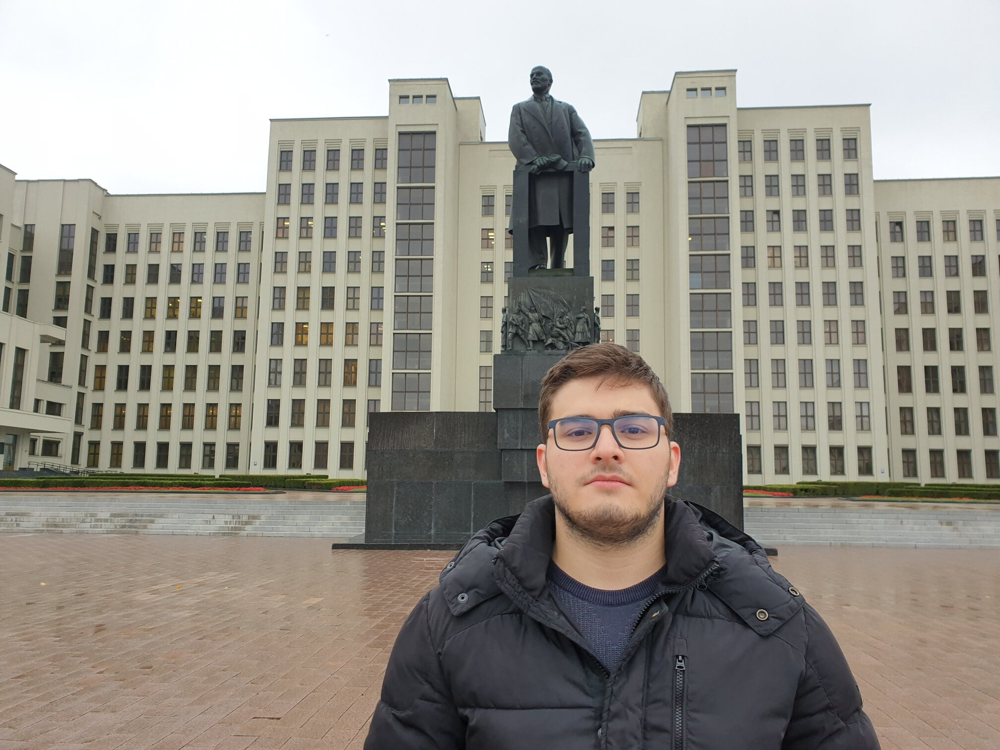

- Banjalučki Ćevapi, meaning Banja Luka style ćevapi, is the take of Banja Lukans on the most famous Bosnian food, ćevapi. The main difference being the pieces being larger, it was very tasty for sure. Might be better than "Sarajevski" (Sarajevo style) if I do say so myself.
- I had the best apple cake I have ever had, as well as the best carrot cake.
Me
This is the traveller in question, me, Yusuf Kavranoglu, photographed in different countries to prove that I like travelling.
-
In Taiwan, 2023 
-
In Bosnia, 2023 
-
In Belarus, me and Lenin (me on the front), 2021  -
In China, 2019 
Food
Places
Banja Luka is rich with historical places. Notably, the fortress of the city that was built by the Ottomans is huge, and the walls can be freely walked on. The dungeons of the city has been turned into a cafe/restaurant which has a fantastic atmosphere, and it is here I had the apple cake and the carrot cake mentioned above.
In addition to above, the historical part is not huge and is pretty walkable. Ferhadija mosque built by the Ottomans still stands, fully restored, despite being damaged heavily during the war. The Christ the Savior church is also worth visiting.
People
Images
-
Banjalučki Ćevapi -
The apple cake I had -
Ferhadija mosque